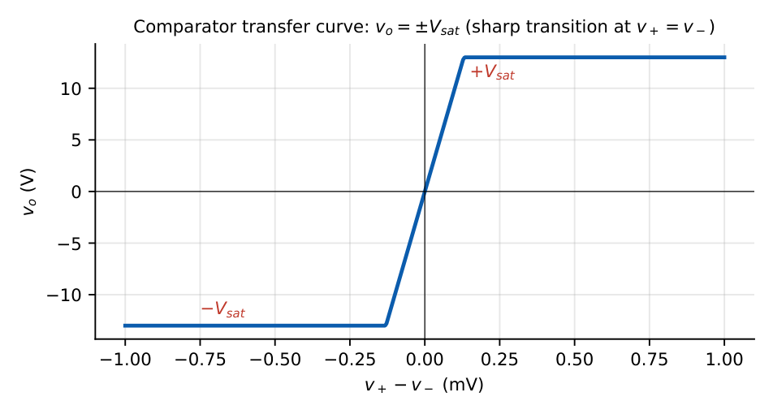
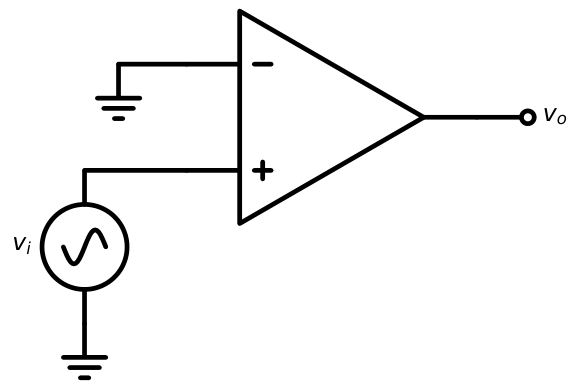
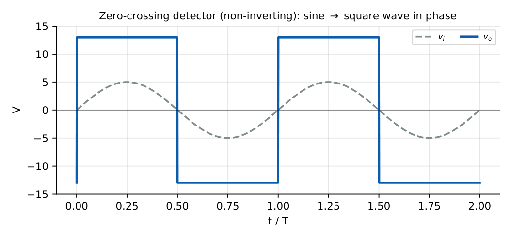
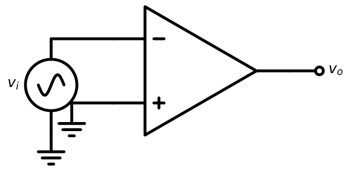
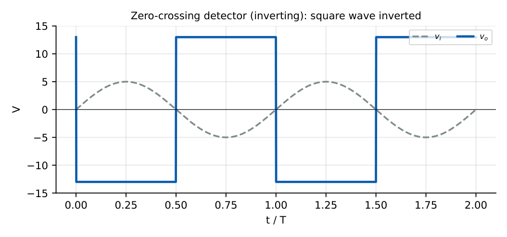
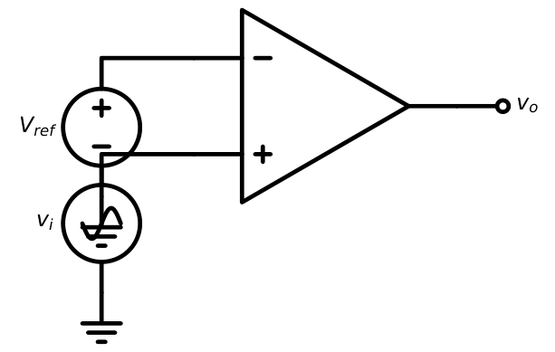
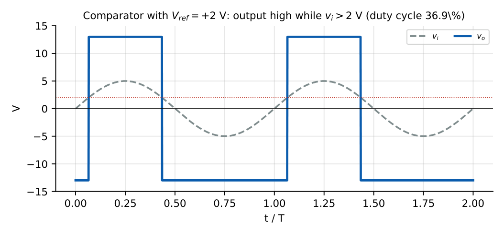
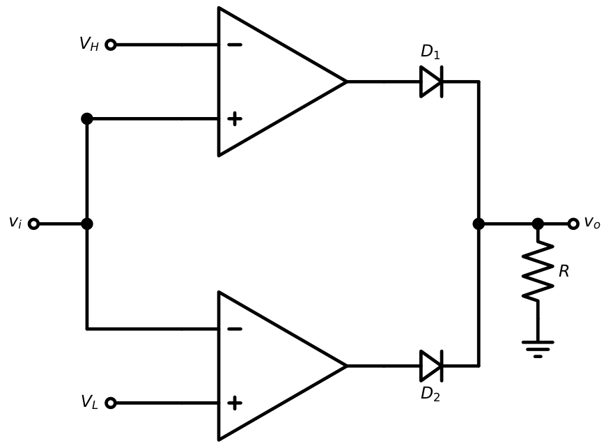
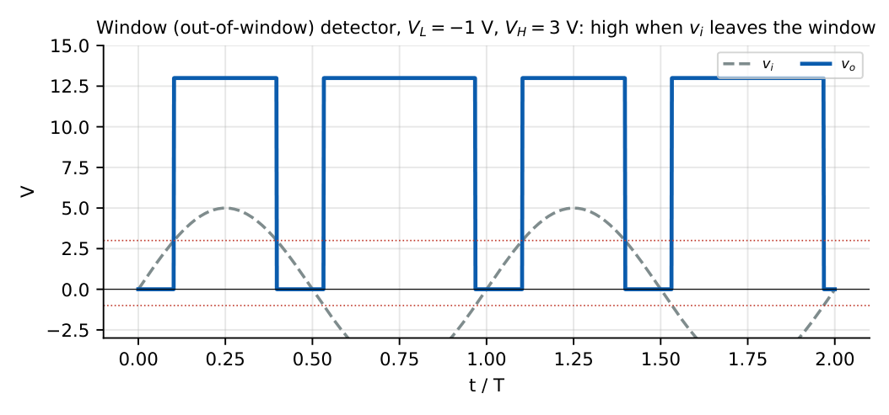
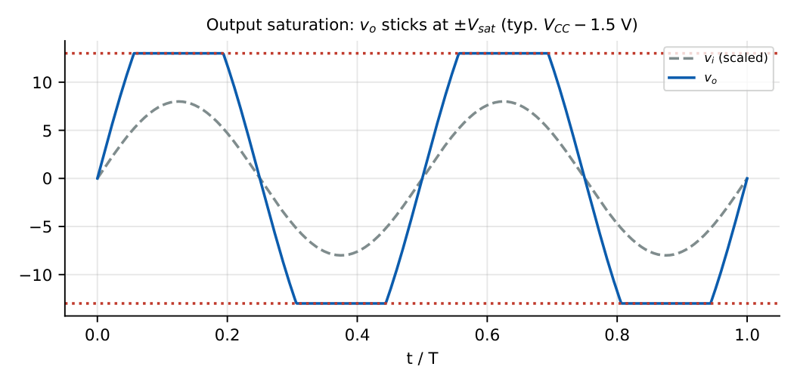

Op-Amp Comparators
In this chapter
22.1 Comparator principle
A comparator compares an input voltage with a reference and gives a two-level (digital-like) output. An op-amp used open loop (no feedback) acts as a comparator because its huge gain drives the output into saturation for any \(|v_+-v_-|\) larger than \(V_{sat}/A\approx0.1\) mV.

\(v_o=\begin{cases}+V_{sat},&v_+>v_-\\-V_{sat},&v_+<v_-\end{cases}\) \(V_{sat}\approx V_{CC}-(1\text{--}2)\ \mathrm V\)
The virtual short does not apply because there is no negative feedback. A dedicated comparator IC (LM311, LM339) has an open-collector output and faster response (about \(100\)–\(200\) ns) than a general-purpose op-amp.
22.2 Zero-crossing detector
The reference is \(0\) V: the output changes state whenever the input crosses zero.


Applications: sine-to-square conversion, phase detection, timing (measure the time between crossings). The output edge is not perfectly vertical: it is limited by the slew rate.
22.3 Inverting comparator
Signal at the inverting input, reference at the non-inverting input:


22.4 Non-inverting comparator
Signal at the non-inverting input: the output is high when \(v_i>V_{ref}\); low when \(v_i<V_{ref}\). Same as Section 22.2 when \(V_{ref}=0\); the output is in phase with the input crossing.
22.5 Reference-voltage comparator

Switching occurs at \(v_i=V_{ref}\). For \(v_i=V_m\sin\omega t\) the output is high for \(\theta_1<\omega t<\pi-\theta_1\) with \(\theta_1=\sin^{-1}(V_{ref}/V_m)\).
Duty cycle \(D=\dfrac{\pi-2\theta_1}{2\pi}=\dfrac12-\dfrac{\theta_1}{\pi}\)

\(V_m=5\), \(V_{ref}=2\): \(\theta_1=23.6^\circ\); high from \(23.6^\circ\) to \(156.4^\circ\): \(D=132.8/360=36.9\%\). A negative \(V_{ref}=-2\) gives \(D=63.1\%\).
22.6 Window comparator
Two comparators with reference levels \(V_L<V_H\) detect whether the input lies inside a window.


Fraction of time outside the window: \(v_i>3\): \(\theta\) from \(36.9^\circ\) to \(143.1^\circ\) (\(106.3^\circ\)); \(v_i<-1\): from \(191.5^\circ\) to \(348.5^\circ\) (\(156.9^\circ\)). Total \(263.2^\circ/360^\circ=73.1\%\). Applications: over/under-voltage monitors, battery-voltage checks, go/no-go testers.
22.7 Output saturation
The output can never exceed \(\pm V_{sat}\). With a comparator driving a logic gate the output must be clamped (Zener, or open-collector output with a pull-up to logic supply) to give proper levels: e.g. \(+5\) V/\(0\) V.

(1) A comparator has no \(-3\) dB bandwidth in the usual sense: what matters is the propagation delay (\(\approx\) slew-limited transition from \(-V_{sat}\) to \(+V_{sat}\)). (2) With a slowly varying or noisy input, an open-loop comparator chatters near the threshold: see Chapter 23. (3) Do not apply the virtual-short rule.
22.8 GATE waveform problems
Q1. An ideal comparator has \(V_{ref}=1\) V and a triangular input from \(0\) to \(4\) V. The fraction of the period for which the output is high (non-inverting) is .
Q2. \(v_i=10\sin\omega t\), non-inverting comparator with \(V_{ref}=5\) V. The duty cycle of the output is (A) 16.7% (B) 33.3% (C) 50% (D) 66.7%.
Q3. A window comparator with \(V_L=2\) V, \(V_H=4\) V is given a \(3\) V DC input. The out-of-window output is (high/low).
Q4. A 741 has \(v_+-v_-=1\) mV in open loop with \(\pm15\) V supplies. The output is closest to (A) \(+1\) V (B) \(+100\) V (C) \(+13\) V (D) 0.
Q5. For an inverting ZCD driven by \(8\sin\omega t\) with \(\pm12\) V saturation, the output during the first half-cycle is (A) \(+12\) (B) \(-12\) (C) 0 (D) \(-8\) V.
Answers: Q1: \((4-1)/4=75\%\). Q2: (B): \((180^\circ-2\times30^\circ)/360^\circ=33.3\%\). Q3: low (inside the window). Q4: (C) \(\approx+13\) V. Q5: (B).
- Duty cycle for \(V_m=8\), \(V_{ref}=4\) (non-inverting). [33.3%]
- Design a window detector for \(4.5\le v\le5.5\) V. [\(V_L=4.5\) V, \(V_H=5.5\) V]
- Why do dedicated comparators outperform op-amps in speed? [No compensation capacitor; saturation-tolerant output stage]